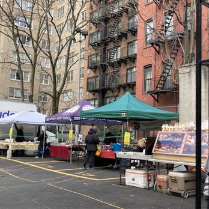
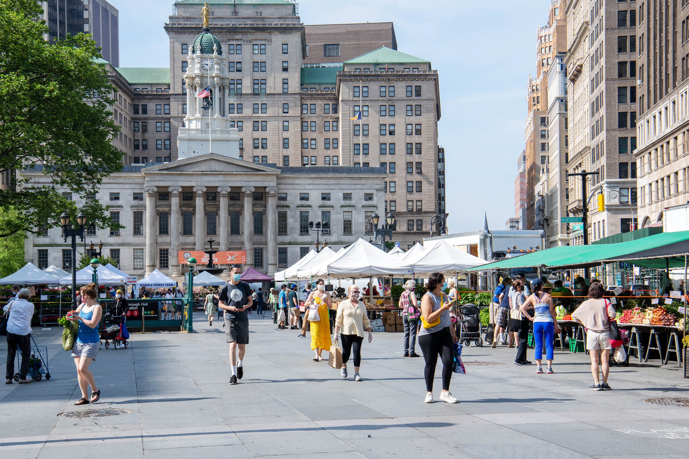
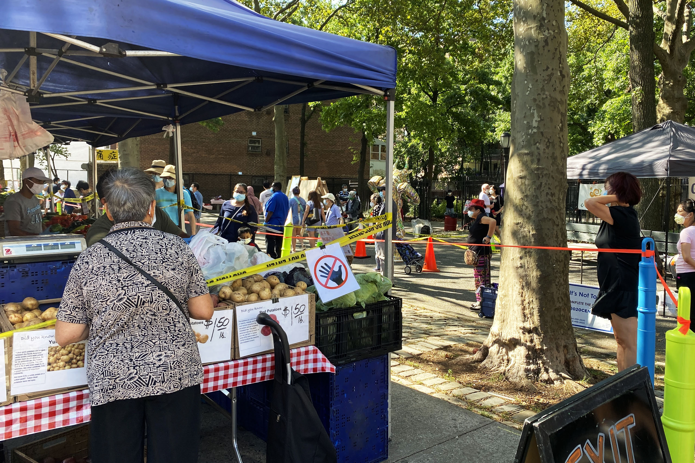
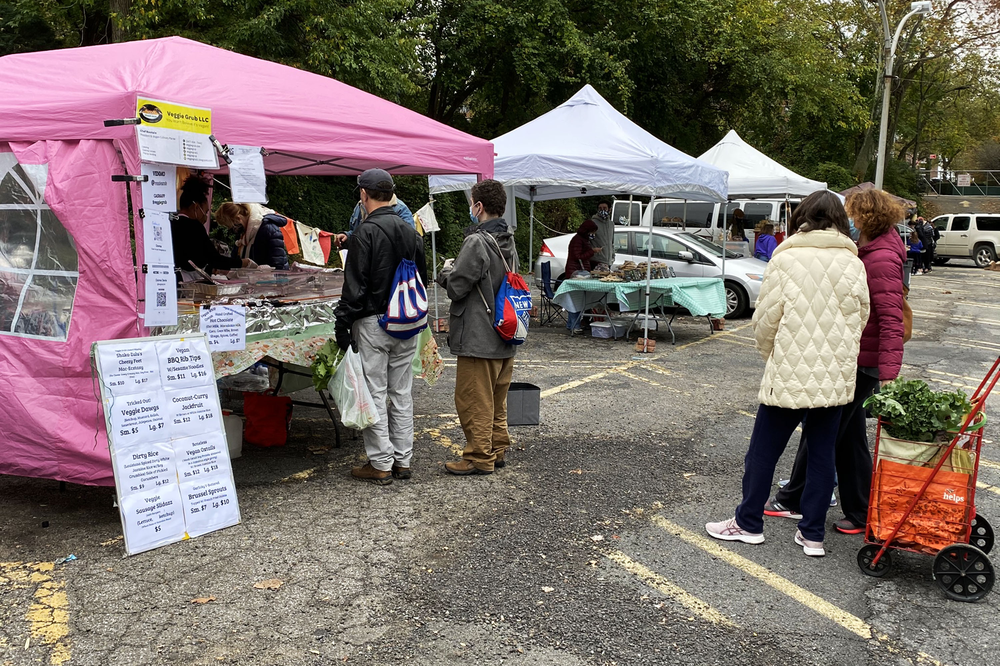
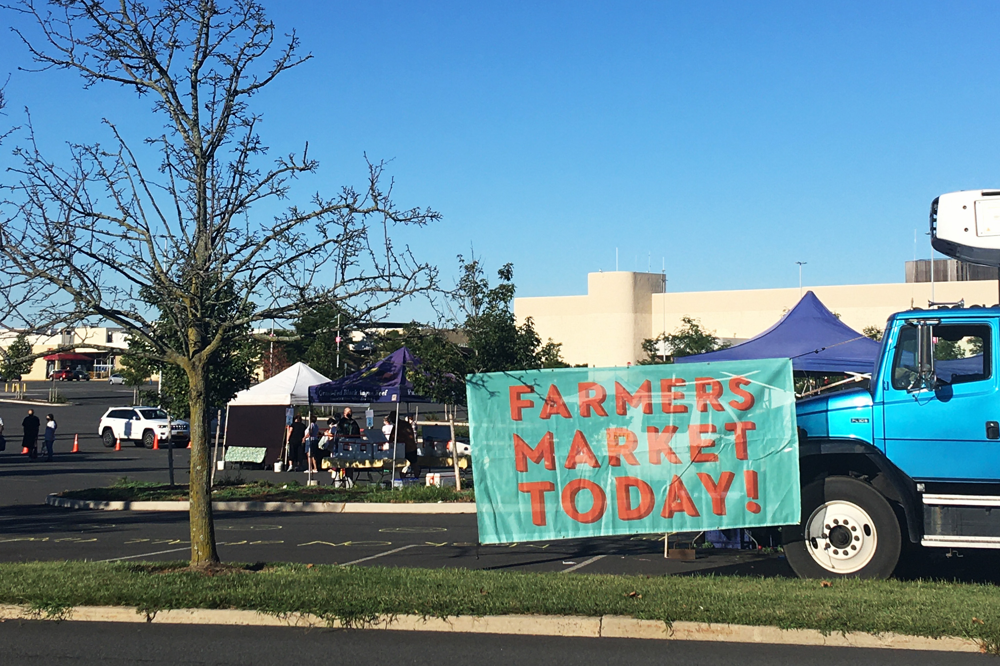

This space is intended to explore the location of New York City's farmers markets in relation to high and low income neighborhoods. It will attempt to reveal whether these markets are serving a critical need in areas lacking financial and food resources, or if they are located in areas that don't need to depend on them.
Manhattan - 82nd St Greenmarket

Brooklyn - Borough Hall Greenmarket

Queens - Flushing Greenmarket

Bronx - Riverdale Y Sunday Market

Staten Island - Saint George Greenmarket

Download and print a map of NYC Farmers Markets:
Learn how to strengthen the food system in your own neighborhood: